A subset  of a group
of a group  is a subgroup, written
is a subgroup, written  , if
it contains the identity, is closed under the operation, and contains
the inverse of each of its elements. It is then a group under the
restricted operation.
, if
it contains the identity, is closed under the operation, and contains
the inverse of each of its elements. It is then a group under the
restricted operation.
A non-empty subset
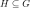
is a subgroup if and only if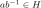
for all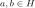
.
If is a subgroup the condition is immediate. Conversely, take
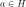
, which exists since is non-empty. Then
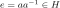
; for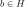
,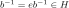
; and for ,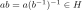
. The identity of is the identity of , which by the uniqueness of an identity
element is the only candidate.
The intersection of any non-empty family of subgroups of is a
subgroup of .
Each member contains  , so the intersection does and is non-empty.
If
, so the intersection does and is non-empty.
If
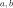
lie in every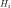
, then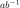
lies in every since each is a subgroup; the criterion applies.For
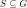
, the subgroup generated by , written
, written
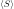
, is the intersection of all subgroups of
containing – a subgroup by the previous proposition, and by
construction the smallest one containing . A group is finitely
generated if it is for some finite .
is the set  of all finite products
of all finite products
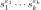
with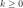
,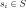
and (the empty product being).
is a subgroup: it contains , it is closed under
multiplication by concatenation of words, and the inverse of
is
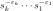
, again such a product. It contains, so 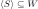
. Conversely any subgroup containing is closed under products and inverses, hence
contains every such word, so 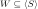
.
The two descriptions are used for opposite purposes and it is worth
keeping both: the intersection definition proves things about
with no computation ("it is contained in every
subgroup containing "), while the word description is what one
computes with. The same pair of definitions reappears for generated
ideals, spans of vectors, generated topologies and closures.